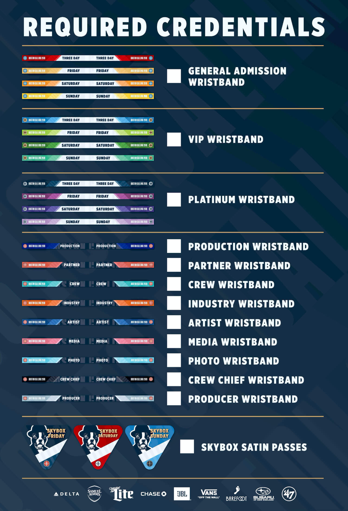

ADDITIONAL CREDITS
Created at Gupta Media
Renn Bauhan, brand identity
Sarah Ingerick, motion design
PROJECT INVOLEMENT
- information architecture
- UX & UI design
- social media content creation
- on-site signage
- credential design
RELATED LINKS
boston calling websiteboston calling
WEB DESIGN, SOCIAL MEDIA & ADVERTISING, ON-SITE DESIGN
In 2018, Boston Calling was looking for a full refresh of their brand identity. They hoped to celebrate their 10th edition with something special – a special anniversary look and a brand new website.
To kickstart the web process, we needed to discover what areas of their current site needed to improve and who we were designing for. The site they had lacked in personality and it struggled to easily provide information to festival goers. These festival goers are looking for a few main things: Lineup, Tickets, Date, and Location. With this redesign, we needed to ensure attendees could quickly find what they needed to know about the festival.
A large hurdle in this redesign revolved around tickets, specifically the new “tier” system that many festivals have recently adopted. Tickets to a weekend long event aren’t cheap, so many festival goers will hold out until closer to the event to purchase their passes. It seems like the responsible option, until you come to find out that the ticket you buy the week before the festival actually costs more than if you were to have bought one six months ago. It’s an unfortunate discovery, so Boston Calling wanted to make sure the website was transparent with their customers. They wanted to make it known that if you buy now, you’ll be saving money for the same experience.
The solve was a custom ticket widget. Through multiple designs and testing, we were able to clearly and concisely provide users with all pricing information for the days, tiers, and levels of tickets available. We were able to show that Tier 1 Three Day General Admission tickets bought now would cost $299.00 compared to, but if you wait until Tier 3, you’ll be paying $349.00 for the same ticket.
One detail left out from the experience was timing. It was intentional to give users the information about tiers and pricing, but keep when those tiers would change a secret.
Taking Over on Social Media
Once the new website was up and running, it was time to move on to paid and organic media. Working closely with our in house media team, we were the main content creators for Boston Calling’s social media.
The 2019 lineup brought on headliners like Twenty One Pilots, Tame Impala, and Travis Scott. For us, this meant the content needed to gear towards a younger generation. We aimed to hype up the festival’s appeal while also letting our audience know about important details or ticket/payment deadlines.
Putting Together the Festival Grounds
In addition to branding, web design, and social advertising work, credentials and on-site signage was a major deliverable for the festival. This included wristbands, mailers, directional signage, food signage, digital artist screens, schedules, and more.
The biggest undertaking between all of the credentials and on-site signage were the wristbands. It’s the first piece of the festivals that customers get to interact with personally when they finally get that envelope in the mail.
While simultaneously making these wristbands fun, collectible pieces of festival memorabilia, they needed to also be a functional form of security. Each ticket type (Three Day General Admission, Friday General Admission, Friday VIP, Friday Platinum, etc) must be easily distinguishable at a glance. Boston Calling’s security team are checking hundreds of thousands of wristbands during the event, so there needs to be a quick visual difference to each to help them ensure no one is where they shouldn’t be. This means testing different colors and pairings until we find the right combination where no two wristbands look alike.
